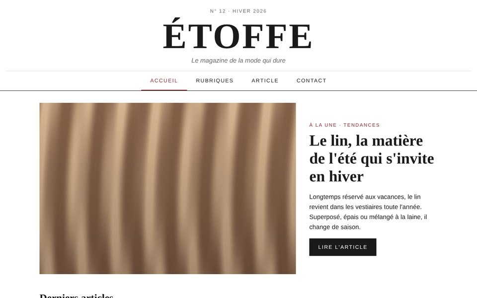

Site de magazine de mode
Situation
Dans le module HTML-CSS du DSP Assistant Intégrateur web, nous devions créer en groupe le site d'un magazine de mode en ligne. C'était notre premier projet d'équipe : chaque membre codait de son côté, mais le site final devait donner l'impression d'avoir été fait par une seule personne.
Tâche
Livrer un site de 4 pages (accueil, rubriques, article, contact) avec une navigation et un style identiques sur toutes les pages, lisible sur ordinateur et sur téléphone.
Action
- Définition en équipe de l'arborescence du site et répartition des pages entre les membres.
- Choix d'une structure HTML commune (en-tête, navigation, contenu, pied de page) et d'une feuille de style partagée : couleurs, polices, espacements.
- Intégration de la grille d'articles, de la page article (titre, image, citation) et du formulaire de contact.
- Adaptation au téléphone avec des media queries, puis vérification de tous les liens.
Résultat
Un site complet de 4 pages, responsive, avec la même navigation et la même charte sur toutes les pages.
Voir le site →